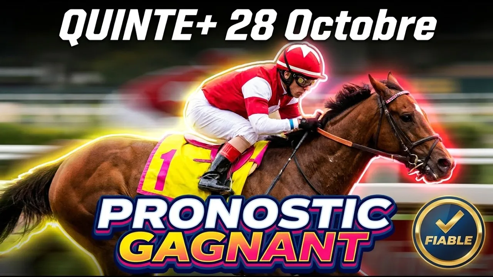

Auteuil ne pardonne aucune illusion. Quand quinze poulains et pouliches de quatre ans s'élancent à plus de quarante kilomètres à l'heure sur les trois mille six cents mètres du Prix Santo Pietro, la moindre hésitation sur une haie se paye cash. Ce mercredi 28 octobre 2026, la Réunion 1 Course 4 à 13h55 nous offre un handicap de niveau Listed doté de quatre-vingt-dix-huit mille euros.
Sur cette piste en gazon corde à gauche, le terrain assoupli d'automne va imposer un test d'endurance redoutable. La clé de cette course réside dans une lecture technique précise : quatre kilos de surcharge sur les haies d'Auteuil représentent un handicap majeur dans la ligne droite finale.
Comprendre le parcours des trois mille six cents mètres d'Auteuil est indispensable avant de poser le moindre ticket. Le départ s'effectue dans la ligne opposée, puis les concurrents franchissent une série d'obstacles sélectifs avant d'aborder la boucle finale. Entre le top-weight à soixante-dix kilos et le bas du tableau à soixante-deux kilos, les huit kilos d'écart représentent un avantage colossal pour les chevaux légers sur un sol très assoupli. La gestion du rythme par les jockeys sera la clé de la victoire.
Commençons l'étude avec le numéro un, Louminos. Ce pensionnaire de Richard Schmidlin est confié à Nicolas Ferreira. Lauréat au printemps du Prix Gérald de Rochefort à ce niveau, il porte le top-weight de soixante-dix kilos en valeur soixante-deux. Après deux courses de remise en route indispensables suite à une absence, il retrouve de la fraîcheur. Appréciant les pistes assouplies, ce cheval de classe a les moyens de refaire parler de lui à belle cote pour les places.
Le numéro deux, Hell Storm, représente l'entraînement redoutable de Yannick Fouin et la monte de Thomas Beaurain. Ce mâle de quatre ans porte soixante-dix kilos en valeur soixante-deux. Quatrième de Listed sur ce tracé au printemps, il dispute aujourd'hui son tout premier handicap. Bien que cette rentrée après plus de six mois d'absence pose une question sur sa forme, sa qualité intrinsèque m'incite à le retenir en fin de sélection.
Passons au numéro trois, Falcon Jet. Entraîné par Arnaud Chaillé-Chaillé et Florent Pamart, il est monté par Quentin Gaignard avec soixante-neuf kilos et demi en valeur soixante-et-un virgule cinq. Impressionnant vainqueur de la course référence du 6 octobre, il a fait étalage de sa classe. Malgré ses quatre kilos de surcharge, sa forme resplendissante en fait une base technique solide pour le podium.
Le numéro quatre, Normandy Man, dépend de l'entraînement de François Nicolle et de la monte d'Angelo Zuliani sous soixante-neuf kilos et demi en valeur soixante-et-un virgule cinq. Il reste sur deux tombés consécutifs qui ont refroidi les ardeurs. S'il possède d'évidents moyens théoriques, son manque de sérénité sur les obstacles dans les lots touffus représente un risque majeur. Nous faisons le choix de le laisser en retrait. Le numéro cinq, Tigress du Berlais, pouliche entraînée par Marcel Rolland associée à Felix de Giles sous soixante-huit kilos et demi, manque encore d'un parcours après sa rentrée décevante. C'est une impasse mesurée.
Regardons le numéro six, Gabison. Également mis au point par Marcel Rolland, ce fils de Great Pretender est confié à Ludovic Philipperon sous soixante-huit kilos en valeur soixante. Ne le condamnez surtout pas sur ses récents échecs en terrain ferme. Vainqueur au printemps du Quinté+ Prix Gaston Branère en terrain lourd, il retrouve enfin sa surface de prédilection. Techniquement, Gabison est prêt à se racheter avec éclat.
Le numéro sept, Raffles Princess, est une femelle préparée par Yannick Fouin avec Bryony Le Clerc sous soixante-sept kilos et demi en valeur cinquante-neuf virgule cinq. Arrêtée le mois dernier, elle alterne le bon et le moins bon. Malgré un succès en terrain lourd au printemps devant des rivaux de qualité, elle manque de constance au plus haut niveau. Sa tâche s'annonce délicate face aux mâles.
Venons-en à notre grand favori, le numéro huit, Roman Skies. Entraîné par Julien Phelippon et piloté par Kevin Nabet, ce hongre porte soixante-six kilos en valeur cinquante-huit. Troisième remarquable de la course clé du 6 octobre pour son retour sur les haies, il a fini en trombe dans la ligne droite. L'analyse technique révèle un avantage de poids décisif par rapport à Falcon Jet : trois kilos et demi d'écart sur ce terrain assoupli représentent une marge considérable. Roman Skies rassemble toutes les garanties pour s'imposer.
Le numéro neuf, Lady du Brizais, est la seconde cartouche de l'écurie Chaillé-Chaillé et Pamart avec Gaëtan Masure sous soixante-six kilos en valeur cinquante-huit. Avec seulement quatre courses au compteur, elle est peu expérimentée mais possède une marge évidente. Sixième du Quinté+ Prix Calabrais, elle a le profil idéal pour brouiller les cartes sur le plan technique.
Passons au numéro dix, Emsilord. Entraîné par Hugo Mérienne et monté par Gabin Meunier sous soixante-quatre kilos en valeur cinquante-six, ce hongre d'une régularité exemplaire mérite un grand respect. Sixième du handicap référence après avoir animé les débats, il cherche son jour avec application. Très à l'aise sur ce tracé, Emsilord est un choix incontournable pour compléter la combinaison technique.
Le numéro onze, Eh Man, représente l'association en forme de Noël George et Amanda Zetterholm avec Lucas Zuliani sous soixante-quatre kilos en valeur cinquante-six. Tombé lors de sa rentrée, il ne faut pas effacer ses brillants succès du printemps sur ce parcours. Très avantagé par l'assouplissement des pistes d'automne, ce sauteur généreux peut pimenter les rapports à belle cote.
Le numéro douze, Alhunter, entraîné par Giada Menato et monté par Baptiste Le Clerc sous soixante-deux kilos et demi, monte nettement de catégorie dans cette Listed face aux ténors de la génération. Le numéro treize, Métronome d'Ainay, dépend de Gabriel Leenders avec Thomas Journiac sous soixante-deux kilos. Pour son tout premier essai dans la catégorie des handicaps, ce hongre sérieux aborde l'épreuve avec de la fraîcheur. Le numéro quatorze, Pareil Pareil, entraîné par Yannick Fouin et monté par Léo-Paul Bréchet sous soixante-deux kilos, reste sur un brillant succès mais subit deux kilos et demi de surcharge.
Voici le coup de poker fantastique de notre sélection, le numéro quinze, Matignon Léon. Préparé par Carina Fey et associé à Clément Smeulders sous soixante-trois kilos en valeur cinquante-trois, ce hongre a signé une rentrée remarquée en prenant la quatrième place sur ce tracé. L'analyse technique montre qu'il est parfaitement situé tout en bas du tableau, affûté pour cet objectif et adorant le terrain souple. Matignon Léon peut créer une énorme surprise sur le podium.
Pour construire un ticket gagnant sur ce Prix Santo Pietro, la logique technique impose de privilégier la régularité et la situation au poids. L'analyse croisée des performances montre que Roman Skies détient un avantage décisif sur Falcon Jet grâce aux conditions de course. L'intégration de spécialistes du terrain lourd comme Gabison et Louminos apporte une assise solide, tandis que Matignon Léon en bas de tableau offre un potentiel de gain exceptionnel pour faire sauter la banque.
PRONOSTIC : 8 - 3 - 15 - 6 - 1 - 10 - 11 - 2
Regardez l'analyse technique complète sur YouTube :
▶ Pronostic Quinté Auteuil 28 octobre
Bonne chance sur vos combinaisons, et à bientôt pour la suite des courses.